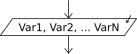

Lectura

La instrucci?n Leer permite ingresar informaci?n desde el ambiente.
Leer <variable1> , <variable2> , ... ,
<variableN> ;
Esta instrucci?n toma N valores desde el ambiente (en este caso el teclado) y los asigna a las N variables mencionadas. Pueden incluirse una o m?s variables, por lo tanto el comando leer? uno o m?s valores.
Si una variable donde se debe guardar el valor le?do no existe, se crea durante la lectura. Si la variable existe se pierde su valor anterior ya que tomar? el valor nuevo, raz?n por la cual se dice que la lectura es "destructiva" (destruye el valor que ten?a previamente la variable).
Si se utiliza sintaxis flexible se permite opcionalmente separar las variables a leer simplemente con espacios en lugar de comas. Esto se configura en el cuadro de Opciones del Pseudoc?digo.
El ejemplo Suma muestra un programa muy simple que lee dos n?meros y calcula y muestra la suma de los mismos.